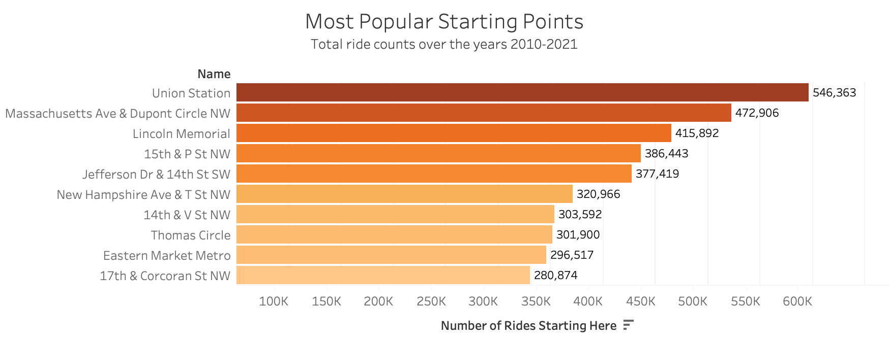
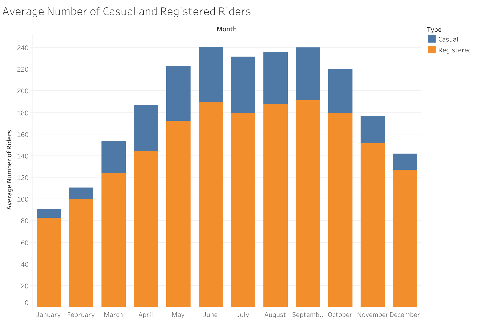
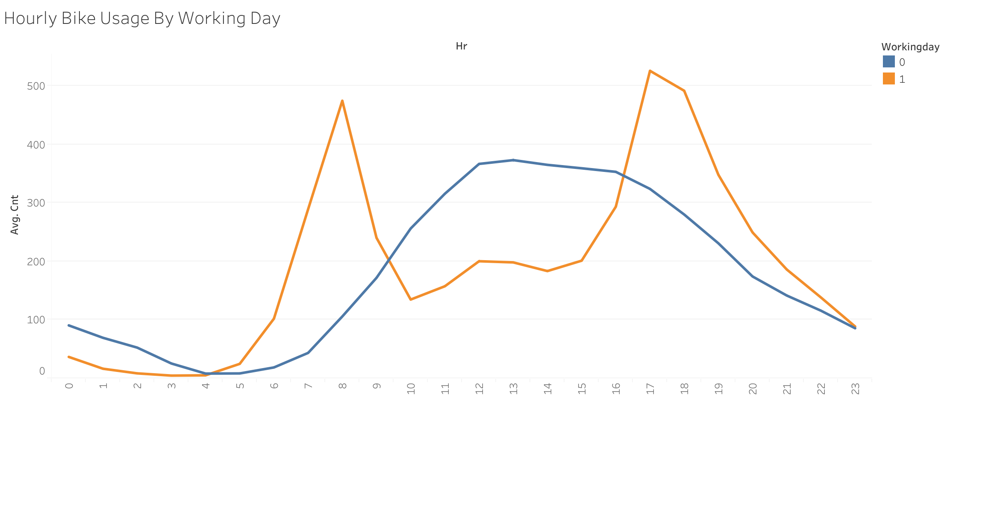

We collected data from the Capital Bikeshare website on all the bike rides that have happenned between 2010 and 2021. This data included the start and end destinations of each ride. In this section of our analysis, we aggregated the data to count the total number of rides starting and ending at each bike station. With the help of these maps, we can see the most popular origin points and destinations within the capital.
The following visualizations show the locations from which bike rides begin. Filter the Tableau map for the number of bikers that started at each location. Scroll and zoom to discover more about the geography of DC.
In contrast, these visualizations display the locations where bike rides end.
I calculated the most popular routes in 2017.
In the graph below, we can see that most people ride during the summer months in DC - June through September. The winter months get significantly less bike usage.
We can explore the possible reasons for this with the visualization below. Out of the three weather data types we have - temperature, wind speed, and humidity - temperature is the only one that has a clear correlation with bike useage.
Furthermore, with the graph below, we may deduce that the increased bike-usage in the summer months may also have to do with the increased tourism in the DC area in the summer. The number of casual (unregistered) bike riders increases by over 5 times from January to June. This may be because tourists who use Capital Bike Share are unlikely to become a registered user.
Below we see a couple clear trends. Firstly, that on workdays most people are riding around 8am and 5pm, suggesting that that many use Capital Bike Share for work commutes. On non-workdays, most people are riding between noon and 4pm.
This visualization shows the length of time that bikes have been rented throughout the history of the program. Most rides (over 10 Million) have been shorter than an hour. However, there are also a large number of bikers who keep their bikes rented for 24 hours. The Capital Bikeshare program has a 24-hour pass, which is likely the reason that a large number of rides end at around the 24-hour mark, but significantly less rides end after longer rental durations.
The Capital Bikeshare system data: https://www.capitalbikeshare.com/system-data benbalter GitHub: https://github.com/benbalter/dc-maps